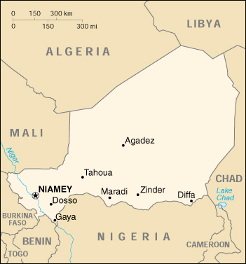

|
Niger | |
| Introduction Geography People Government Economy Communications Transportation Military Transnational Issues | ||
|  | ||
| Niger | Introduction | Top of Page |
| Background: | Not until 1993, 33 years after independence from France, did Niger hold its first free and open elections. A 1995 peace accord ended a five-year Tuareg insurgency in the north. Coups in 1996 and 1999 were followed by the creation of a National Reconciliation Council that effected a transition to civilian rule in December 1999. |
| Niger | Geography | Top of Page |
| Location: | Western Africa, southeast of Algeria |
| Geographic coordinates: | 16 00 N, 8 00 E |
| Map references: | Africa |
| Area: |
total:
1.267 million sq km
land: 1,266,700 sq km water: 300 sq km |
| Area - comparative: | slightly less than twice the size of Texas |
| Land boundaries: |
total:
5,697 km
border countries: Algeria 956 km, Benin 266 km, Burkina Faso 628 km, Chad 1,175 km, Libya 354 km, Mali 821 km, Nigeria 1,497 km |
| Coastline: | 0 km (landlocked) |
| Maritime claims: | none (landlocked) |
| Climate: | desert; mostly hot, dry, dusty; tropical in extreme south |
| Terrain: | predominately desert plains and sand dunes; flat to rolling plains in south; hills in north |
| Elevation extremes: |
lowest point:
Niger River 200 m
highest point: Mont Greboun 1,944 m |
| Natural resources: | uranium, coal, iron ore, tin, phosphates, gold, petroleum |
| Land use: |
arable land:
3%
permanent crops: 0% permanent pastures: 7% forests and woodland: 2% other: 88% (1993 est.) |
| Irrigated land: | 660 sq km (1993 est.) |
| Natural hazards: | recurring droughts |
| Environment - current issues: | overgrazing; soil erosion; deforestation; desertification; wildlife populations (such as elephant, hippopotamus, giraffe, and lion) threatened because of poaching and habitat destruction |
| Environment - international agreements: |
party to:
Biodiversity, Climate Change, Desertification, Endangered Species, Environmental Modification, Hazardous Wastes, Nuclear Test Ban, Ozone Layer Protection, Wetlands
signed, but not ratified: Climate Change-Kyoto Protocol, Law of the Sea |
| Geography - note: | landlocked |
| Niger | People | Top of Page |
| Population: | 10,355,156 (July 2001 est.) |
| Age structure: |
0-14 years:
47.97% (male 2,528,484; female 2,439,051)
15-64 years: 49.75% (male 2,518,400; female 2,633,677) 65 years and over: 2.28% (male 123,589; female 111,955) (2001 est.) |
| Population growth rate: | 2.72% (2001 est.) |
| Birth rate: | 50.68 births/1,000 population (2001 est.) |
| Death rate: | 22.71 deaths/1,000 population (2001 est.) |
| Net migration rate: | -0.73 migrant(s)/1,000 population (2001 est.) |
| Sex ratio: |
at birth:
1.03 male(s)/female
under 15 years: 1.04 male(s)/female 15-64 years: 0.96 male(s)/female 65 years and over: 1.1 male(s)/female total population: 1 male(s)/female (2001 est.) |
| Infant mortality rate: | 123.57 deaths/1,000 live births (2001 est.) |
| Life expectancy at birth: |
total population:
41.59 years
male: 41.74 years female: 41.44 years (2001 est.) |
| Total fertility rate: | 7.08 children born/woman (2001 est.) |
| HIV/AIDS - adult prevalence rate: | 1.35% (1999 est.) |
| HIV/AIDS - people living with HIV/AIDS: | 64,000 (1999 est.) |
| HIV/AIDS - deaths: | 6,500 (1999 est.) |
| Nationality: |
noun:
Nigerien(s)
adjective: Nigerien |
| Ethnic groups: | Hausa 56%, Djerma 22%, Fula 8.5%, Tuareg 8%, Beri Beri (Kanouri) 4.3%, Arab, Toubou, and Gourmantche 1.2%, about 1,200 French expatriates |
| Religions: | Muslim 80%, remainder indigenous beliefs and Christians |
| Languages: | French (official), Hausa, Djerma |
| Literacy: |
definition:
age 15 and over can read and write
total population: 13.6% male: 20.9% female: 6.6% (1995 est.) |
| Niger | Government | Top of Page |
| Country name: |
conventional long form:
Republic of Niger
conventional short form: Niger local long form: Republique du Niger local short form: Niger |
| Government type: | republic |
| Capital: | Niamey |
| Administrative divisions: | 7 departments (departements, singular - departement), and 1 capital district* (capitale district); Agadez, Diffa, Dosso, Maradi, Niamey*, Tahoua, Tillaberi, Zinder |
| Independence: | 3 August 1958 (from France) |
| National holiday: | Republic Day, 18 December (1958) |
| Constitution: | the constitution of January 1993 was revised by national referendum on 12 May 1996 and again by referendum on 18 July 1999 |
| Legal system: | based on French civil law system and customary law; has not accepted compulsory ICJ jurisdiction |
| Suffrage: | 18 years of age; universal |
| Executive branch: |
chief of state:
President Mamadou TANDJA (since 22 December 1999); note - the president is both chief of state and head of government
head of government: President Mamadou TANDJA (since 22 December 1999); note - the president is both chief of state and head of government; Prime Minister Hama AMADOU (since 31 December 1999) was appointed by the president and shares some executive responsibilities with the president note: President Ibrahim BARE was assassinated on 9 April 1999; subsequent elections were held under the nine-month provisional government of Major Daouda Mallam WANKE cabinet: 23-member cabinet appointed by President TANDJA elections: president elected by popular vote for a five-year term; last held 24 November 1999 (next to be held NA 2004) election results: Mamadou TANDJA elected president; percent of vote - Mamadou TANDJA 59.9%, Mahamadou ISSOUFOU 40.1% |
| Legislative branch: |
unicameral National Assembly (83 seats, members elected by popular vote for five-year terms)
elections: last held 24 November 1999 (next to be held NA 2004) election results: percent of vote by party - NA%; seats by party - MNSD-Nassara 38, CDS-Rahama 17, PNDS-Tarayya 16, RDP-Jama'a 8, ANDPS-Zaman Lahiya 4 |
| Judicial branch: | State Court or Cour d'Etat; Court of Appeal or Cour d'Appel |
| Political parties and leaders: | Democratic Rally of the People-Jama'a or RDP-Jama'a [Hamid ALGABID]; Democratic and Social Convention-Rahama or CDS-Rahama [Mahamane OUSMANE]; National Movement for a Developing Society-Nassara or MNSD-Nassara [Mamadou TANDJA, chairman]; Nigerien Alliance for Democracy and Social Progress-Zaman Lahiya or ANDPS-Zaman Lahiya [Moumouni Adamou DJERMAKOYE]; Nigerien Party for Democracy and Socialism-Tarayya or PNDS-Tarayya [Mahamadou ISSOUFOU]; Union of Democratic Patriots and Progressives-Chamoua or UPDP-Chamoua [Professor Andre' SALIFOU, chairman] |
| Political pressure groups and leaders: | NA |
| International organization participation: | ACCT, ACP, AfDB, CCC, ECA, ECOWAS, Entente, FAO, FZ, G-77, IAEA, IBRD, ICAO, ICFTU, ICRM, IDA, IDB, IFAD, IFC, IFRCS, ILO, IMF, Intelsat, Interpol, IOC, ITU, MIPONUH, MONUC, NAM, OAU, OIC, OPCW, UN, UNCTAD, UNESCO, UNIDO, UPU, WADB, WAEMU, WCL, WFTU, WHO, WIPO, WMO, WToO, WTrO |
| Diplomatic representation in the US: |
chief of mission:
Ambassador Joseph DIATTA
chancery: 2204 R Street NW, Washington, DC 20008 telephone: [1] (202) 483-4224 through 4227 |
| Diplomatic representation from the US: |
chief of mission:
Ambassador Charles O. CECIL
embassy: Rue Des Ambassades, Niamey mailing address: B. P. 11201, Niamey telephone: [227] 72 26 61 through 72 26 64 FAX: [227] 73 31 67 |
| Flag description: | three equal horizontal bands of orange (top), white, and green with a small orange disk (representing the sun) centered in the white band; similar to the flag of India, which has a blue spoked wheel centered in the white band |
| Niger | Economy | Top of Page |
| Economy - overview: | Niger is a poor, landlocked Sub-Saharan nation, whose economy centers on subsistence agriculture, animal husbandry, reexport trade, and increasingly less on uranium, because of declining world demand. The 50% devaluation of the West African franc in January 1994 boosted exports of livestock, cowpeas, onions, and the products of Niger's small cotton industry. The government relies on bilateral and multilateral aid - which was suspended following the April 1999 coup d'etat - for operating expenses and public investment. In 2000, the World Bank approved a structural adjustment loan of $35 million to help support fiscal reforms. However, reforms could prove difficult given the government's bleak financial situation. |
| GDP: | purchasing power parity - $10 billion (2000 est.) |
| GDP - real growth rate: | 3.5% (2000 est.) |
| GDP - per capita: | purchasing power parity - $1,000 (2000 est.) |
| GDP - composition by sector: |
agriculture:
40%
industry: 18% services: 42% (1998) |
| Population below poverty line: | 63% (1993 est.) |
| Household income or consumption by percentage share: |
lowest 10%:
0.8%
highest 10%: 35.4% (1995) |
| Inflation rate (consumer prices): | 2.8% (2000 est.) |
| Labor force: | 70,000 receive regular wages or salaries |
| Labor force - by occupation: | agriculture 90%, industry and commerce 6%, government 4% |
| Unemployment rate: | NA% |
| Budget: |
revenues:
$377 million, including $146 million from foreign sources
expenditures: $377 million, including capital expenditures of $105 million (1999 est.) |
| Industries: | uranium mining, cement, brick, textiles, food processing, chemicals, slaughterhouses |
| Industrial production growth rate: | NA% |
| Electricity - production: | 200 million kWh (1999) |
| Electricity - production by source: |
fossil fuel:
100%
hydro: 0% nuclear: 0% other: 0% (1999) |
| Electricity - consumption: | 401 million kWh (1999) |
| Electricity - exports: | 0 kWh (1999) |
| Electricity - imports: | 215 million kWh (1999) |
| Agriculture - products: | cowpeas, cotton, peanuts, millet, sorghum, cassava (tapioca), rice; cattle, sheep, goats, camels, donkeys, horses, poultry |
| Exports: | $385 million (f.o.b., 1999) |
| Exports - commodities: | uranium ore 65%, livestock products, cowpeas, onions (1998 est.) |
| Exports - partners: | France 45%, Nigeria 27%, UK 11% (1999) |
| Imports: | $317 million (f.o.b., 1999) |
| Imports - commodities: | consumer goods, primary materials, machinery, vehicles and parts, petroleum, cereals |
| Imports - partners: | France 22%, Cote d'Ivoire 15%, Nigeria 8%, US 3% (1999) |
| Debt - external: | $1.3 billion (1999 est.) |
| Economic aid - recipient: |
$341 million (1997)
note: the IMF approved a $73 million poverty reduction and growth facility for Niger in 2000 and announced $115 million in debt relief under the Heavily Indebted Poor Countries (HIPC) initiative |
| Currency: | Communaute Financiere Africaine franc (XOF); note - responsible authority is the Central Bank of the West African States |
| Currency code: | XOF |
| Exchange rates: | Communaute Financiere Africaine francs (XOF) per US dollar - 699.21 (January 2001), 711.98 (2000), 615.70 (1999), 589.95 (1998), 583.67 (1997), 511.55 (1996); note - from 1 January 1999, the XOF is pegged to the euro at a rate of 655.957 XOF per euro |
| Fiscal year: | calendar year |
| Niger | Communications | Top of Page |
| Telephones - main lines in use: | 16,000 (1997) |
| Telephones - mobile cellular: | 13,000 (1995) |
| Telephone system: |
general assessment:
small system of wire, radio telephone communications, and microwave radio relay links concentrated in the southwestern area of Niger
domestic: wire, radiotelephone communications, and microwave radio relay; domestic satellite system with 3 earth stations and 1 planned international: satellite earth stations - 2 Intelsat (1 Atlantic Ocean and 1 Indian Ocean) |
| Radio broadcast stations: | AM 5, FM 5, shortwave 4 (1998) |
| Radios: | 680,000 (1997) |
| Television broadcast stations: | 10 (plus seven low-power repeaters) (1997) |
| Televisions: | 125,000 (1997) |
| Internet country code: | .ne |
| Internet Service Providers (ISPs): | 1 (2000) |
| Internet users: | 3,000 (2000) |
| Niger | Transportation | Top of Page |
| Railways: | 0 km |
| Highways: |
total:
10,100 km
paved: 798 km unpaved: 9,302 km (1996) |
| Waterways: |
300 km
note: the Niger River is navigable from Niamey to Gaya on the Benin frontier from mid-December through March |
| Ports and harbors: | none |
| Airports: | 27 (2000 est.) |
| Airports - with paved runways: |
total:
9
2,438 to 3,047 m: 2 1,524 to 2,437 m: 6 under 914 m: 1 (2000 est.) |
| Airports - with unpaved runways: |
total:
18
1,524 to 2,437 m: 1 914 to 1,523 m: 15 under 914 m: 2 (2000 est.) |
| Niger | Military | Top of Page |
| Military branches: | Army, Air Force, National Gendarmerie, Republican Guard, National Police |
| Military manpower - military age: | 18 years of age |
| Military manpower - availability: | males age 15-49: 2,202,608 (2001 est.) |
| Military manpower - fit for military service: | males age 15-49: 1,190,787 (2001 est.) |
| Military manpower - reaching military age annually: | males: 108,993 (2001 est.) |
| Military expenditures - dollar figure: | $20 million (FY96) |
| Military expenditures - percent of GDP: | 1.1% (FY96) |
| Niger | Transnational Issues | Top of Page |
| Disputes - international: | Libya claims about 19,400 sq km in northern Niger; delimitation of international boundaries in the vicinity of Lake Chad, the lack of which led to border incidents in the past, has been completed and awaits ratification by Cameroon, Chad, Niger, and Nigeria |
{kind=link}
{kind=link}